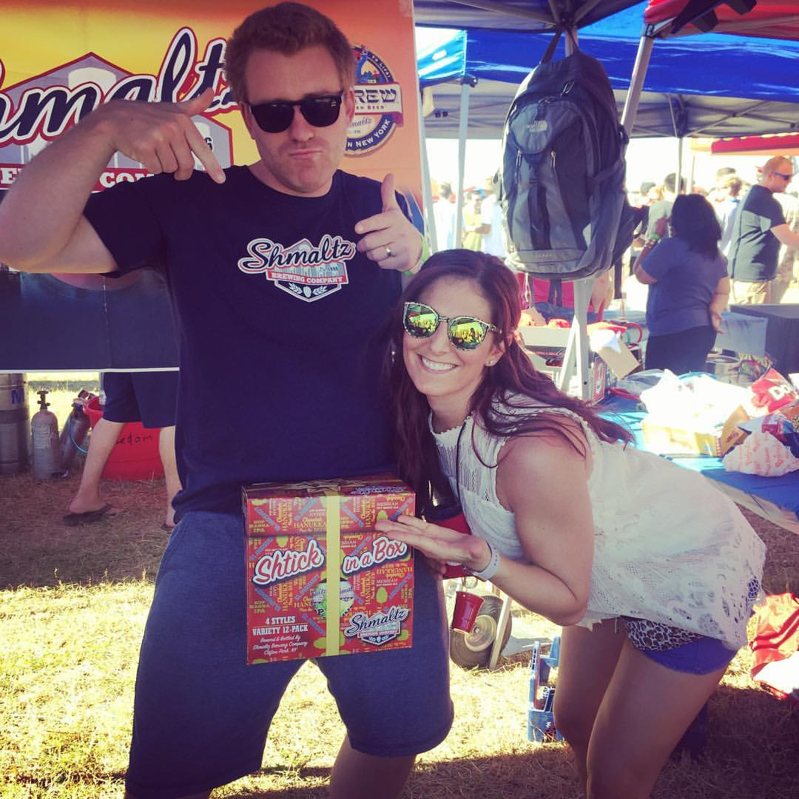

About Me
Hi! My name is Jamie Pittman and I am originally from Fuquay-Varina, NC. I love being active, spending time with my friends & family, which includes my two dogs, Heidi and Chewy. I grew up in the restuarant business, but have worked in the field of health and wellness for the last 10 years.
I love to laugh and have been a fan of Saturday Night Live since I was about 12 years old. I would spend hours learning Spartan Cheerleader cheers, or rehearsing a skit as Collette Reardon. It is my DREAM to be able to see a live show! I also happen to resemble Tina Fey...kind of.
Connect with Me